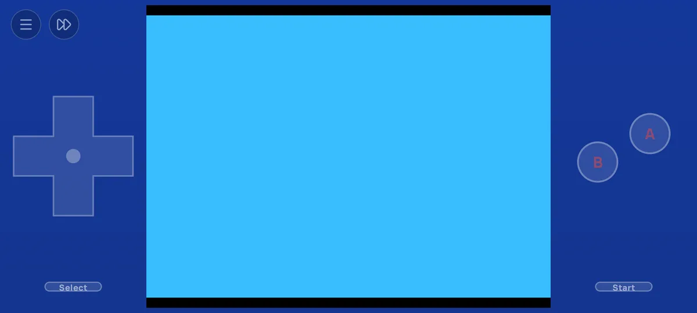

Offline
Un joc descărcat merge fără rețea. Totul se sincronizează când revine conexiunea.
Client Android
Jocurile de pe serverul tău RetroHub, jucabile offline, cu salvări care te urmează pe web.


Aplicația nu funcționează singură: se conectează la serverul tău RetroHub găzduit propriu. Biblioteca, jocurile, salvările și timpul de joc vin de acolo.
Un joc descărcat merge fără rețea. Totul se sincronizează când revine conexiunea.
Începi pe telefon, continui în browser, și invers.
Două versiuni ale aceleiași salvări? Tu alegi pe care o păstrezi.
Navigare cu controller, prin atingere sau cu tastatura.
O dispunere tactilă pentru fiecare consolă, mutabilă cu degetul, ascunsă când se conectează un controller.
Emulator, imagine, limbă, regiune, butoane, turbo și coduri.



Capturile arată aplicația în franceză. Alte limbi vor urma în curând.